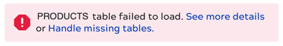
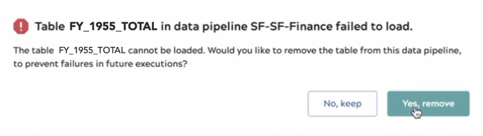
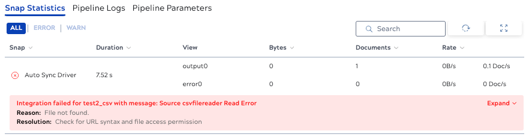
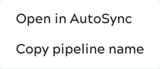
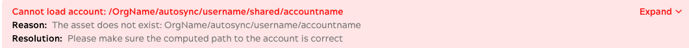
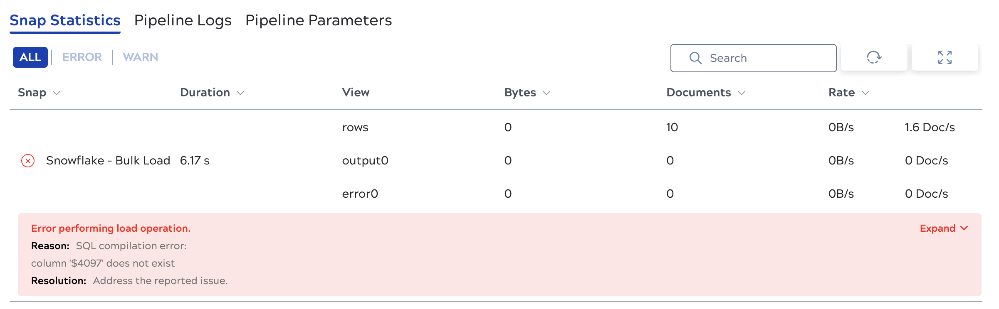

Troubleshoot data pipelines
In the dashboard, red indicators show which data pipelines encountered errors. The data pipeline details panel identifies general errors. Environment admins can view more information about data pipeline executions in Monitor. Non-admin users can view more information about data pipelines in Monitor. This page describes how to troubleshoot some common errors.
Table failed to load
Different issues can cause load failures. Failures for tables that previously loaded successfully can occur because the table was removed from the source since the last load or the source has some other problem.
When a data pipeline fails with the error that a table failed to load, you can remove the failed table from the data integration to run it successfully. To do this:
- Click the Handle missing tables link in the error message:

- In the dialog that opens, click Yes, remove:

Failed to retrieve data
When creating or editing a data pipeline, you might receive a Failed to retrieve data message when configuring an endpoint.
This can be caused by a temporary failure to connect to an endpoint.
If the endpoint is on-premises, check to make sure you selected the correct Groundplex and try again.
For off-premises endpoints, try again.
An Account is not available to select during data pipeline creation
To provide connection information, you can enter credentials in AutoSync, Designer, or Project Manager. Designer and Project Manager offer multiple account types for most endpoints and not all types are compatible with AutoSync. When you create or edit a data pipeline, the existing credentials list includes only compatible account assets. AutoSync supports the following Designer and Project Manager account types:
If you create Accounts in the IIP using the AutoSync Manager, you can only create Accounts supported by AutoSync.
Load completes with errors
- Invalid source data.
- Size of source data exceeds limits of the destination. For example, the number of rows or columns or the size in bytes.
- Names in the source for tables or columns not valid for the destination. For example, names with unsupported or too many characters.
- Expiration of the endpoint account token.
- Limitations in the staging environment.
- Endpoint account quota limits.
If errors occur during a full load, AutoSync generates an error log and attempts to finish the load. Org admins can view error logs for records that failed to load.
Synchronization fails
- Invalid source data.
- Size of source data exceeds limits of the destination. For example, the number of rows or columns or the size in bytes.
- Names in the source for tables or columns not valid for the destination. For example, names with unsupported or too many characters.
- Expiration of the endpoint account token.
- Limitations in the staging environment.
- Endpoint account quota limits.
On the initial run of a data pipeline, AutoSync does a full load. Subsequent runs use upsert (for endpoints where it is available), only adding new records and updating changed records. If errors occur during upsert, synchronization fails. You can force a full load by fully removing or truncating all destination tables.
Find error details
Navigate to the Monitor Execution overview page and find the data pipeline of interest.
- To open the details panel, click the execution row.
The Snap statistics tab displays the error as shown in the following example:

- To make changes to fix an issue, open the source data pipeline in AutoSync:
- In the execution row, hover over the three dots to display the actions menu:

- Select Open in AutoSync. The data pipeline opens in the AutoSync Edit page.
- In the execution row, hover over the three dots to display the actions menu:
Cannot load account
If execution details include an error similar to the following, there is an issue with the credentials associated with the pipeline. These might be credentials saved in AutoSync or Accounts saved in the IIP.

This error can be caused by the following:
- The credentials or Account were removed or modified incorrectly.
- The owner of the data pipeline was removed from the Org or the user group where the Account was created.
- For Snowflake Accounts created in the IIP that reference a JDBC JAR file, the reference must be an absolute path to the file. An absolute path includes the Project or shared folder in which the Account is stored.
Remedy the issue in one of the following ways:
- Check the credentials or Account specified by the path in the error message. Replace or correct it as needed.
- Modify the data pipeline to use valid credentials or a valid Account.
Error loading to a table with a deleted column
When a column is deleted from a source, AutoSync retains the column and its values in the target. If a row is later added to the source table, AutoSync adds the row, but inserts a null value in the deleted column. If the target column does not allow nulls, the data pipeline will fail.
If this occurs, change the target column so that it allows nulls and try again.
Bulk load error
Error message: Bulk load operation failed for the files: [filelist]
This might occur with CSV or JSON files where a null value exists in a non-nullable field. Fix the source file and try again.
Snowflake column doesn't exist
Error message: Error performing load operation:

Snowflake currently has a limit of 4000 columns. If your source has more than that, this error occurs. To load the data successfully, reduce the number of columns or fields in the source and try again.
Troubleshoot AutoSync errors in Project Manager
A data pipeline can complete even though AutoSync was not able to load all tables or objects.
If this happens on a full load, AutoSync writes an error log to a .json file.
The filename includes the object (or table) name, the runtime id, and a timestamp, all separated by underscores.
For example, Contact_58b7a2d080b28239d980b31f_67c3d771-072f-4476-b5dd-ed2860bd8311_1676515756812.json.
Environment admins can review this file.
In Project Manager, navigate to the project for the data pipeline by constructing a URL:
- From the left navigation bar select the global shared folder.
- In the browser address bar, modify the URL:
- Delete
shared - Add
autosync/user_name/pipeline_nameto the end of the URL. For example, if the Org ismyorg, username isme@mycom.com, and the pipeline name ismy-pipeline, the URL would be something like:https://cdn.elastic.snaplogicdev.com/sl/manager.html?v=d84e4d#asset/myorg/autosync/me@mycom.com/my-pipeline - Press Enter or Return to accept the change. The space for that pipeline opens.
- Delete
- In the Assets table, click the Files tab.
- Click the file name to download it.